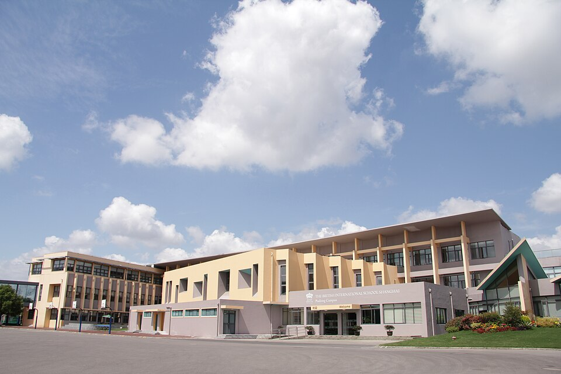

상하이 푸동 캠퍼스 정문(옛 이름 간판이 걸려 있던 시기) · 사진: Elliotrhys / Wikimedia Commons, CC BY-SA 3.0
브리티시 인터내셔널 스쿨 상하이(The British International School Shanghai) — 이름이 둘로 갈린 학교
1. 이름의 내력 — 왜 검색이 헷갈리는가
· 푸동 캠퍼스 — 2002년에 브리티시 인터내셔널 스쿨 상하이 푸동(BISS Pudong)으로 문을 연 것으로 알려져 있습니다. 중국에서 가장 오래 운영된 영국계 국제학교로 알려져 있습니다. 그런데 2015년에 노드앵글리아 인터내셔널 스쿨 상하이 푸동(NAIS Pudong)으로 이름을 바꾼 것으로 알려져 있습니다.
· 푸시 캠퍼스 — 2005년에 문을 연 것으로 알려져 있고, 지금도 브리티시 인터내셔널 스쿨 상하이 푸시(The British International School Shanghai, Puxi)라는 이름을 씁니다.
· 소속 — 두 곳 모두 노드앵글리아 에듀케이션(Nord Anglia Education) 소속으로 알려져 있습니다. 같은 그룹이지만 학교 운영은 캠퍼스별로 따로 이루어집니다.
정리하면 이렇습니다. 옛 이름으로 검색하면 푸동이 나오고, 지금 이름으로 검색하면 푸시가 나옵니다. 그래서 몇 해 전 블로그 글과 올해 학교 안내문이 서로 다른 학교를 가리키는 것처럼 보이는 것입니다. 상하이 학교를 알아보실 때는 "어느 캠퍼스인지"를 먼저 확정하고, 그다음에 그 캠퍼스의 현재 이름으로 자료를 찾으시는 편이 확실합니다.
※ 학비·정원·합격률·재학생 수 등 해마다 바뀌는 수치는 이 글에서 다루지 않습니다. 학교 이름·조직·개설 과정도 바뀔 수 있으니 학교 요강을 직접 확인하세요.
2. 두 캠퍼스 비교
| 항목 | 푸동 캠퍼스 | 푸시 캠퍼스 |
|---|---|---|
| 현재 이름 | 노드앵글리아 인터내셔널 스쿨 상하이 푸동 | 브리티시 인터내셔널 스쿨 상하이 푸시 |
| 개교 | 2002년 | 2005년 |
| 옛 이름 | BISS Pudong(2015년 개명) | 변경 없음 |
| 위치 | 황푸강 동쪽(푸동) | 황푸강 서쪽(푸시) |
| 교육과정 | 영국 국가교육과정 → IGCSE → IB 디플로마 | 영국 국가교육과정 → IGCSE → IB 디플로마 |
| 소속 | 노드앵글리아 에듀케이션 | 노드앵글리아 에듀케이션 |
※ 개설 과정·학년 범위·이름은 해마다 바뀔 수 있습니다. 지원 전 해당 캠퍼스 요강을 직접 확인하세요.
상하이는 황푸강을 기준으로 생활권이 완전히 갈립니다. 푸동에 살면서 푸시 학교를 다니는 일은 통학 시간 때문에 현실적으로 쉽지 않습니다. 그러니 이 학교의 경우 커리큘럼으로 캠퍼스를 고를 수가 없습니다(둘이 같으니까요). 집이 강 어느 쪽인지가 곧 캠퍼스 결정입니다. 주거지를 정하기 전에 학교를 정하시는 편이 좋다고 말씀드리는 이유입니다.
참고로 상하이의 다른 학교들은 사정이 다릅니다. 상하이 아메리칸 스쿨도 푸시·푸동 두 캠퍼스를 두지만 한 학교 이름을 씁니다. 덜위치 칼리지 상하이와 콘코디아 인터내셔널 스쿨 상하이는 각각 별개 학교입니다. 이름이 비슷해 보여도 운영 주체와 캠퍼스 구조가 다르다는 점만 기억하시면 자료 찾기가 훨씬 수월해집니다.
3. 핵심 — 영국식으로 시작해서 IB로 끝난다
이 학교를 볼 때 커리큘럼에서 가장 중요한 지점입니다. 두 캠퍼스 모두 영국 국가교육과정으로 시작하고, 중등에서 IGCSE를 치른 뒤, 고등 마지막 2년을 IB 디플로마로 마무리하는 구조로 알려져 있습니다. A-Level이 아닙니다.
"영국식이면 A-Level이겠지"라고 생각하고 들어가면 Year 11 끝에서 당황하게 됩니다. 두 시험은 요구하는 공부 방식 자체가 다릅니다.
· IGCSE는 과목별로 따로 치릅니다. 과목 수가 많고 각각의 시험 형식이 정해져 있어, 형식을 익히면 점수가 오릅니다.
· IB 디플로마는 여섯 과목을 한꺼번에 갑니다. 여기에 소논문(Extended Essay)·지식론(TOK)·CAS 같은 필수 요소가 붙습니다. 과목 점수만 잘 받아도 이 요소들을 빠뜨리면 디플로마가 나오지 않습니다.
· 그래서 Year 11 → Year 12는 진도가 이어지는 구간이 아니라 규칙이 바뀌는 구간입니다. 시간 관리·과제 관리 방식을 그때 새로 짜야 합니다.
이 전환을 미리 준비하는 방법은 다음 절에 정리했습니다. IB 쪽 세부는 IB DP 점수 완전정복에, IGCSE 과목 선택은 IGCSE 과목 선택 가이드에 따로 정리해 두었습니다.
4. 한국(주재원) 학생이 겪는 어려움
· Year 표기. 영국식이라 Year로 셉니다. 한국 학년과 한 칸씩 어긋나 보여서 "학년이 내려갔다"고 느끼는 경우가 많습니다. 세는 방식이 다른 것입니다. → 국제학교 학년 체계 총정리
· IGCSE 과목 조합이 IB로 이어진다. 다른 영국식 학교처럼 A-Level로 가는 게 아니라 IB 여섯 과목으로 가므로, IGCSE에서 언어·수학·과학·인문·예술을 골고루 깔아 두는 편이 유리합니다. 한 분야에만 몰아 두면 IB 과목 구성에서 막힙니다.
· IB 수학은 AA와 AI 중에 골라야 한다. 이 선택은 대학 전공과 직결됩니다. Year 11 안에 판단해 두시는 편이 좋습니다.
· 영어로 된 수학. 계산은 되는데 알지브라 용어가 영어이고, 서술형에서 풀이 과정을 영어 문장으로 적어야 단계 점수를 받습니다.
· 소논문과 지식론이 낯설다. 한국 교육에는 대응하는 과제가 없어, "무엇을 쓰라는 것인지"를 이해하는 데만 몇 달이 갑니다. 그런데 이건 제출 기한이 정해진 과제라 미루면 학기 전체가 흔들립니다. 인용 규칙도 함께 익혀 두셔야 합니다. → 학문적 정직성(Academic Integrity)
· 상하이의 한인 학원이 줄었다. IGCSE와 IB를 함께 볼 수 있는 곳을 찾기가 예전보다 어려워졌습니다. → 상하이 수학학원·영어학원 찾기
5. 그래서 이렇게 준비합니다
🗺️ 먼저 — 캠퍼스를 확정하고 자료를 모은다
순서를 뒤집지 마세요. 집이 강 어느 쪽인지를 먼저 정하면 캠퍼스가 정해지고, 캠퍼스가 정해지면 그 캠퍼스의 현재 이름으로 자료를 모을 수 있습니다. 이름을 헷갈린 채로 모은 자료는 학년 구성이나 개설 과목이 다른 캠퍼스 것이어서 나중에 다시 확인해야 합니다. → 국제학교 입학 준비 총정리
📖 영어과외 — IGCSE 형식에서 IB 형식으로
같은 영어 과목이라도 IGCSE의 답안과 IB의 에세이는 요구가 다릅니다. IGCSE는 지시어별 형식과 분량이 뚜렷하고, IB는 작품을 놓고 자기 해석을 끌고 가는 글쓰기를 요구합니다. Year 10~11에 주장 → 근거 → 분석의 뼈대를 튼튼히 해 두면 Year 12에 형식만 갈아 끼우면 됩니다. (영어 공부법 참고)
📐 수학과외 — 용어, 서술, 그리고 AA·AI 판단
알지브라·지오메트리 개념을 한국식 풀이와 영어 용어로 연결하고, 풀이를 영어 문장으로 적는 습관을 들입니다. 그다음 Year 11 안에 IB 수학 AA(이론·증명 중심)와 AI(응용·자료 중심) 중 어느 쪽이 아이의 진로와 맞는지 함께 판단합니다. (알지브라 공부법 참고)
🧭 Year 11에 IB 전환 계획을 한 장으로
IB 여섯 과목 후보, 수학 AA·AI 선택, 소논문 주제 분야, 그리고 제출 기한이 있는 요소들의 일정을 한 장에 적어 두세요. Year 12가 시작된 뒤에 이걸 만들면 이미 늦습니다. 학교 상담 일정도 여기에 함께 표시해 두시면 좋습니다. → 진학 카운슬러 활용법 · 성적표 읽는 법
6. 상하이의 강점 — 시차 한 시간의 화상과외
중국은 한국보다 한 시간 느립니다. 상하이 오후 4시가 한국 오후 5시라, 아이의 방과 후 시간이 한국 강사진의 수업 시간과 거의 그대로 맞습니다. 상하이는 한인 학원이 예전보다 줄어 IGCSE와 IB 디플로마를 함께 볼 수 있는 곳을 찾기가 쉽지 않습니다. 아이의 실제 과제와 채점 기준표를 화면에 놓고 "어느 항목에서 깎였는지"부터 보는 방식이 가장 빠릅니다. 다만 중국은 접속 환경에 따라 화상 도구가 달라질 수 있어, 수업 전에 연결을 한 번 점검해 두시는 편이 좋습니다. 상하이 지역 사정은 상하이 수학학원·영어학원 찾기에 정리해 두었습니다.
정리
상하이의 영국계 학교는 캠퍼스가 둘이고 이름도 둘입니다. 푸동은 2002년 BISS Pudong으로 개교해 2015년 노드앵글리아 인터내셔널 스쿨 상하이 푸동으로 바뀐 것으로 알려져 있고, 푸시는 2005년 개교해 지금도 브리티시 인터내셔널 스쿨 상하이 푸시라는 이름을 씁니다. 두 곳 다 영국 국가교육과정 → IGCSE → IB 디플로마 구조로 알려져 있습니다. 그러니 준비의 기준은 두 가지입니다. ① 집이 강 어느 쪽인가 — 그게 캠퍼스를 정합니다. ② Year 11 → Year 12에서 규칙이 바뀐다 — A-Level이 아니라 IB로 갑니다. 30분 무료 상담으로 우리 아이가 지금 어느 구간에 있는지부터 함께 짚어 보세요.